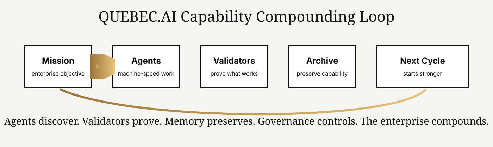

QUEBEC.AI Proof Room
From successful enterprise to AI‑First intelligence organization.
The Proof Room makes the method visible: a mission becomes agent work, agent work becomes evidence, evidence becomes reusable capability, and reusable capability makes the next cycle stronger.
Québec’s sovereign AI flagship enterprise. QUEBEC.AI turns enterprise work into governed, verified, reusable AI‑First capability.
The Manifesto makes people listen. The Proof Room makes people believe.
A powerful AI thesis becomes credible when the work can be inspected. The Proof Room gives executives, journalists, partners, and reviewers a simple place to see the loop: mission, agents, validation, evidence, archive, stronger future work.
Non‑technical
Every docket starts with a plain-English summary before the technical artifacts.
Reviewable
Claims, validation, capability packages, and replay notes are separated so a reader can inspect them one by one.
Compounding
The key output is not a one-time answer. It is a reusable capability that makes the enterprise stronger.
ED‑001 — AI‑First Executive Intelligence Briefing
A publication-safe demonstration of how a successful enterprise process becomes a governed AI‑First capability loop.
Before
An executive briefing depends on manual research, scattered documents, analyst drafts, delayed review, and knowledge that often disappears after delivery.
After
A mission is routed to specialized agents. Validators check quality, evidence, risk, and executive readiness. Reusable templates, signals, and decision rules enter the Capability Archive.
How capability compounds
The right capabilities are discovered by many specialized agents working at machine speed, then preserved only when validation proves they are useful, safe, reusable, and worth carrying forward.

What a serious reviewer can inspect
Claim
What is being asserted, in plain language.
Work
Which agent roles worked on the mission.
Validation
What checks occurred before promotion.
Archive
What became reusable for the next cycle.
The enterprise gets stronger every cycle
When validated work is preserved as reusable capability, future work starts from a better base. That is the compounding effect.
| Reusable capability | What it preserves | Why it matters |
|---|---|---|
| Executive briefing pattern | Structure, checks, audience model, decision questions | Future briefings become faster and more consistent. |
| Signal map | Market, customer, regulatory, technical, and risk signals | Weak signals become reusable strategic intelligence. |
| Validator checklist | Quality, evidence, safety, governance, and executive-readiness criteria | Proof quality improves over time. |
| Agent role constellation | Strategist, researcher, analyst, validator, risk reviewer, editor | Coordination cost drops in future cycles. |
| Evidence Docket format | Claims, artifacts, validation, review, replay, archive | The work becomes easier to trust, inspect, and reuse. |
The strongest proof is not a claim. It is a cycle that becomes stronger after being reviewed.